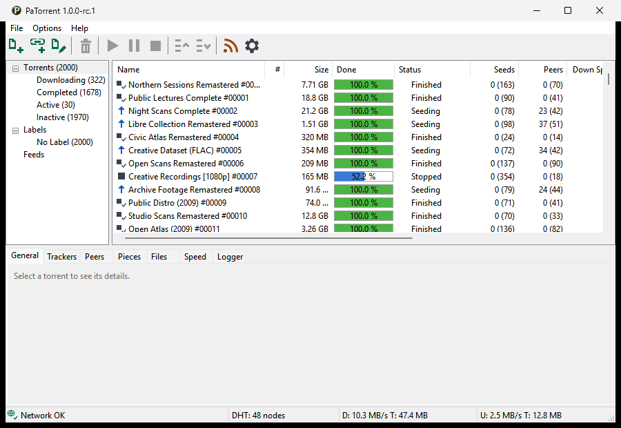
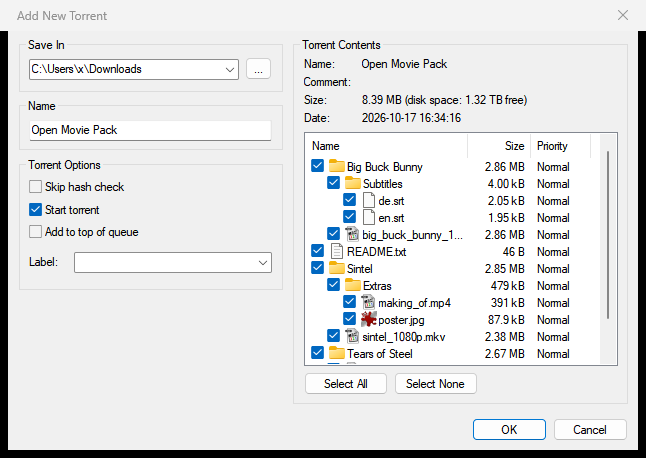

PatinaTorrent: a patina is the good kind of rust
PaTorrent
A lean BitTorrent client in the spirit of µTorrent 2.2.1: small native programs, low RAM and CPU use, and an interface that stays responsive with tens of thousands of torrents.
A native Win32 GUI on Windows, a GTK 4 GUI on Linux, BSD and macOS, and a headless daemon, patorrent-nox, with its own Web UI. The engine is our own Rust port of libtorrent-rasterbar 2.0.11.
The µTorrent 2.2.1 window, recreated
The Windows GUI is a faithful recreation of the µTorrent 2.2.1 main window: the category list, the torrent list with every column, the detail tabs, Preferences and the dialogs. It uses none of µTorrent's code or artwork.

patorrent.exe.
On every desktop
On Linux, BSD and macOS the same main window and dialogs run on GTK 4, from the same frontend code as the Windows window.
Or leave the daemon running headless on a server and use it from a browser, or from either desktop GUI in remote mode.
What is in it
-
A complete engine
TCP and uTP; HTTP, HTTPS and UDP trackers; magnet links, DHT, peer exchange and local peer discovery; protocol encryption, web seeds, SOCKS and HTTP proxies, UPnP / NAT-PMP and IP filters; super-seeding, sequential download and per-torrent speed limits.
-
BitTorrent v2 and hybrid
v2 and hybrid torrents (BEP 52): adding, downloading, seeding and creating them.
-
The whole 2.2.1 client
Detail tabs (General, Trackers, Peers, Pieces, Files, Speed, Logger), Preferences, Add, Create and Properties, the RSS downloader, the scheduler, Auto Shutdown, the tray icon, and file and magnet associations.
-
Built for scale
The goal is 100,000 torrents on a modest PC with an instant UI. On the author's PC the Windows GUI lists 100,000 torrents in about a second, with idle GUI CPU under 0.1 %.
-
Headless, with a Web UI
patorrent-noxruns as a daemon with its own Web UI (laid out for phones too), HTTPS, and a qBittorrent-compatible Web API subset so existing tools can talk to it. It runs as a service under systemd, FreeBSD's rc.d or Windows. The Windows GUI serves the same Web UI over its own torrents: Preferences > Web UI. -
Remote mode
Either desktop GUI can drive a
patorrent-noxon another machine: File > Connect to Remote..., or start it with--remote. -
English and 34 more languages
Right-to-left layouts for Arabic, Hebrew and Persian included. The translations are machine-made and unreviewed, so corrections are welcome.
-
Small and self-contained
Single self-contained executables with minimal dependencies. On Windows: statically linked, no runtime to install, and a portable mode.
Where it runs
Linux
x86_64 and aarch64. The GTK 4 GUI as an AppImage, a Flatpak or plain binaries; the daemon as an AppImage or in the tarball.
macOS
The GTK 4 GUI for Apple silicon (macOS 15 or newer); the daemon for Apple silicon and Intel.
FreeBSD
No ready-made files yet: the GTK GUI and the daemon build from source, and an rc.d script is included.
Free for noncommercial use
PaTorrent is free for personal use, study, hobby projects, and use by charities, schools, research and public institutions, under the PolyForm Noncommercial License 1.0.0. You may share and change it on the same terms. Commercial use needs separate permission. More in the FAQ.
PaTorrent is an independent project. It recreates the look and behaviour of µTorrent 2.2.1 but is not affiliated with, endorsed by or sponsored by µTorrent or BitTorrent, Inc., and uses none of their code, artwork or trademarks.